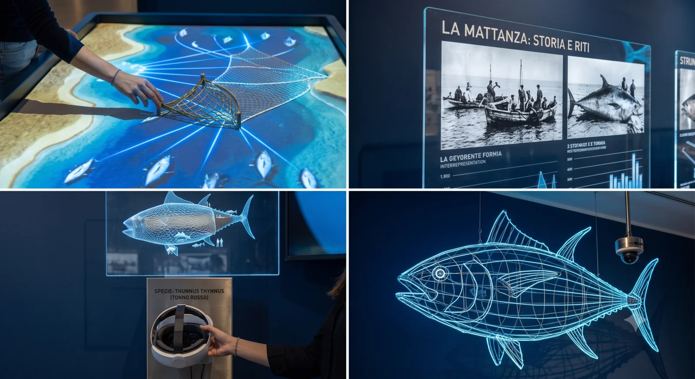
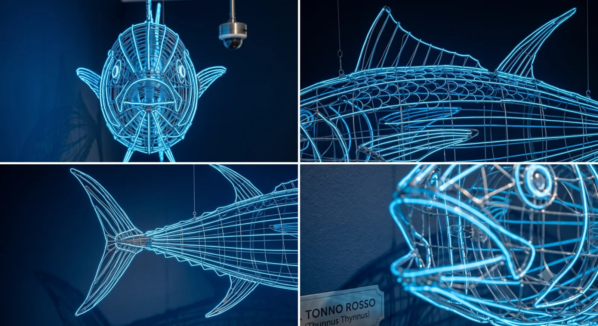
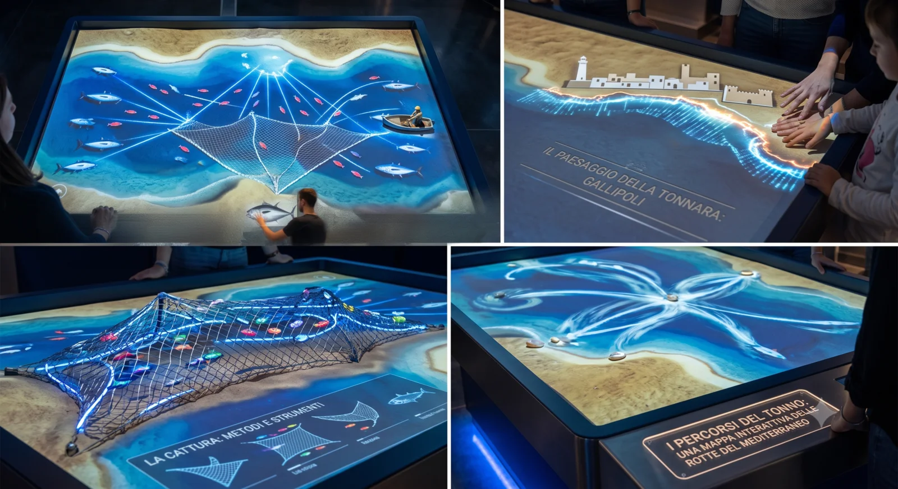

Museum Concept
Visual ideas and archive inspirations
These sketches present the first proposals for telling the story of the tonnara and its territory in a contemporary museum setting.

Immersive Entrance
A welcoming foyer that prepares visitors for the story of the tuna fishery and its traditions.

Narrative Path
Sequential spaces with multimedia installations that guide visitors through the history.

Thematic Halls
Areas devoted to fishing, environment and memory, with immersive and sensory content.

Educational Space
An interactive educational lab to share the tuna fishery tradition with new generations.